Testing¶
Performance evaluation¶
Measurements protocol :
- POSIX monotonic clock
- averaging 100 measurements (no outliers exclusion yet)
Done on :
- Intel(R) Core(TM) i7-3770 CPU @ 3.40GHz
- Linux 4.4.0
- libc6:amd64
- with native x86_64 Karn build.
Data sets¶
32 bits integer key based.
Key number range : 2 to 1048576 keys.
Several presorting schemes :
Subsections below briefly depict key presorting schemes for 256 keys long data sets. Keys are identified by there presorting “sequence number”.
Cumulative ordering¶
Cumulative ordering plots show the cumulative sum of key order relative to each other. It is computed as follows :
- total order factor <= 0
- for current key, compute the order factor with respect to next key coming in
presorting order, i.e. :
- -1 if current < next
- 0 if current = next
- +1 if current > next
- add current order factor to total order factor
- loop back to step 2 untill no more keys.
Ordering length ratio¶
Ordering length ratio plots show the normalized statistical distribution of ordering length of adjacent keys.
The ordering length may be defined as the number of consecutive keys already sorted along the same order factor.
Example:
- 0, 2, 5 key sequence is order length 2 since all keys are presorted in increasing order
- 0, -1, 3 is composed of 2 segments :
- the first with order length -1 [0, -1],
- the second with order length 1 [-1, 3].
The particular case of zero order factor is always considered as being part of the current order segment, i.e. :
- 0, 1, 1 is order length 2
- 0, 3, 3, -1, -1, -5 is composed of 2 segments :
- of order lentgh 2 [0, 3, 3], and
- order length 3 [3, -1, -1, -5] respectively.
fullrev¶
All keys presorted in reverse order.
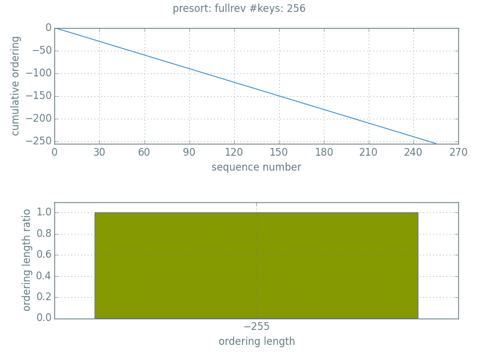rarerev¶
60% of all keys presorted in reverse order.
even¶
1 key in order, the following in reverse order, strictly.
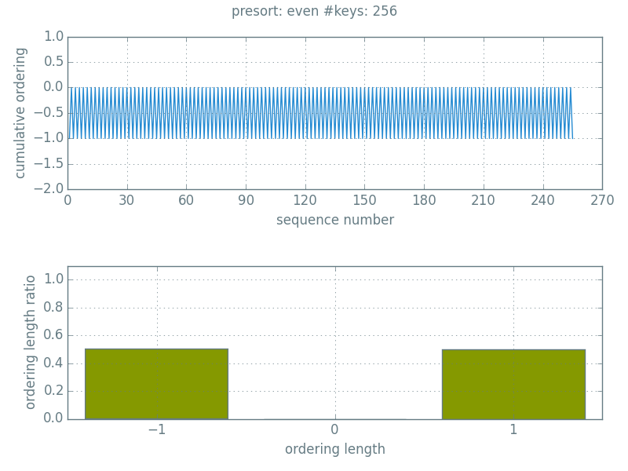rarein¶
60% of all keys presorted in order.
fullin¶
All keys presorted in order.
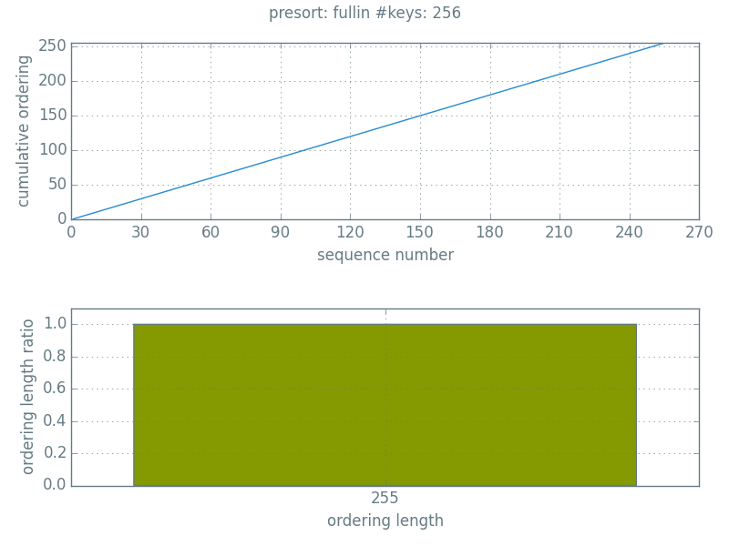worstins¶
Relates to insertion sort worst case, i.e., all keys presorted in order, except the first one which should come in last position (once sorted).

random¶
Pseudo random keys with replacement.
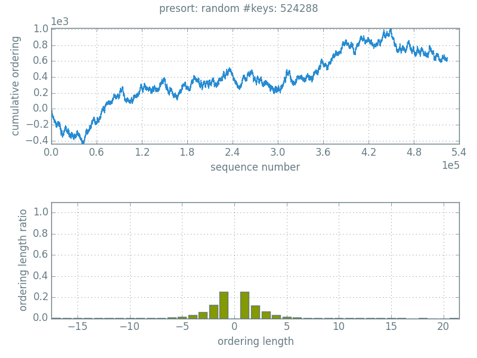Sorting singly linked list¶
Sorting algorithm against data sets¶
For each singly linked list sorting algorithm, following plots show performances comparison for all data sets.
 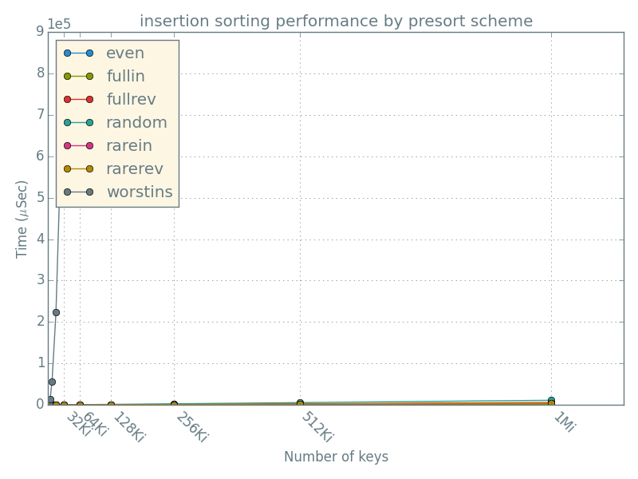
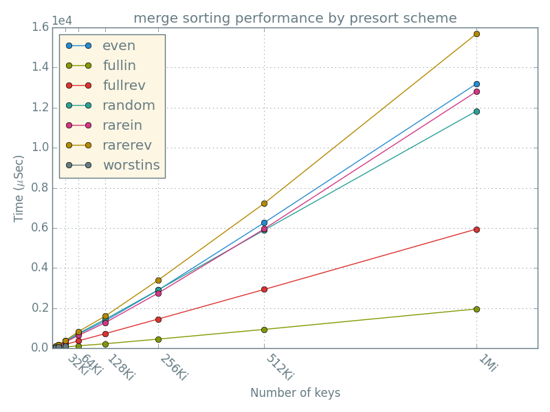
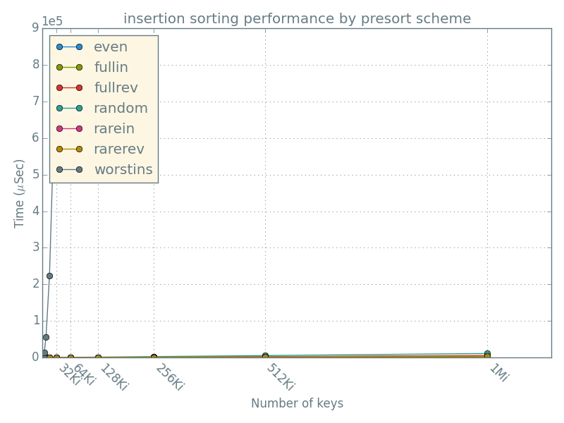
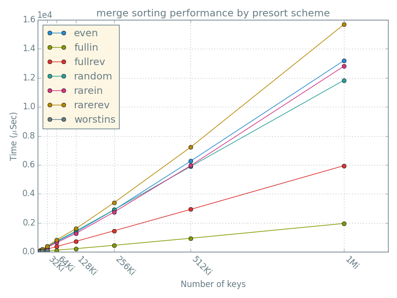
Data set against sorting algorithms¶
For each data set, following plots show performances comparison for all singly linked list sorting algorithms.
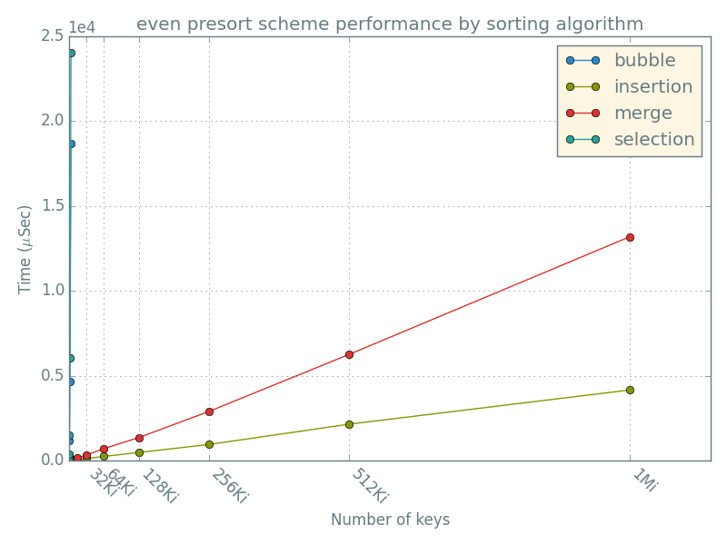 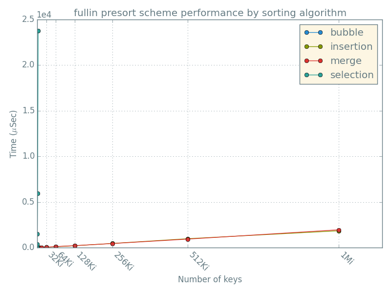 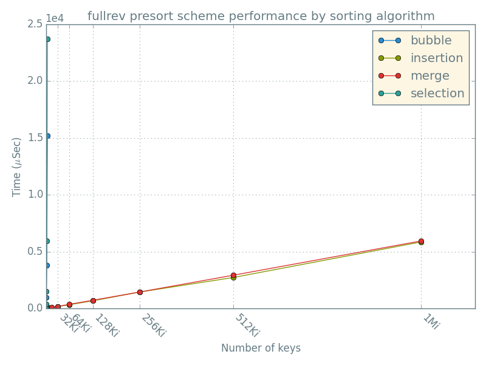 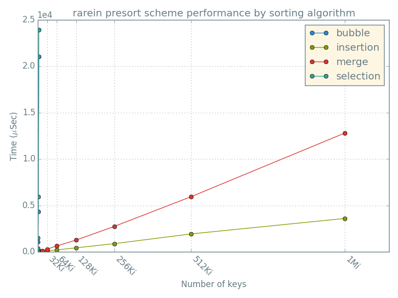 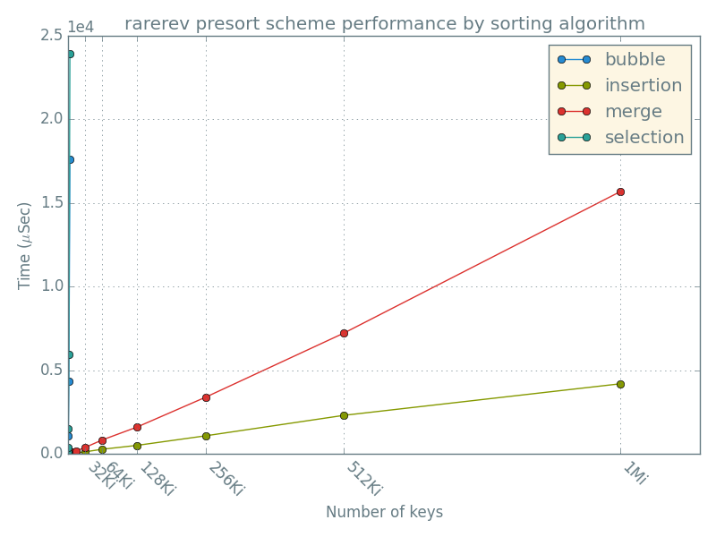 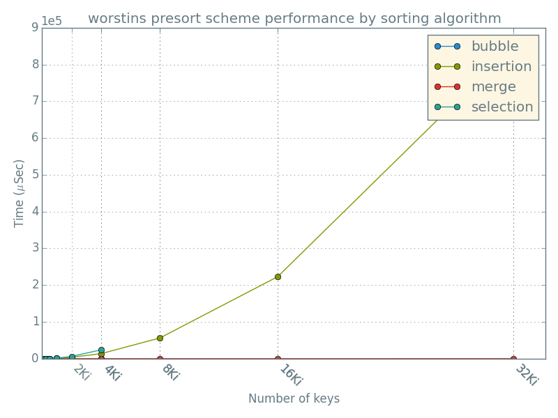